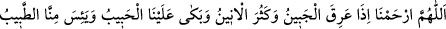
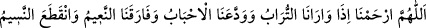
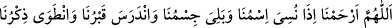
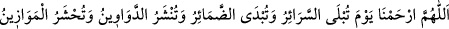
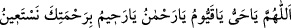

Ömer b. Hattab (r.a.)’ın şöyle dediği rivayet edilmiştir: Rasûlullah (s.a.)’in huzuruna
bir gurup esir geldi. Onların içinden bir kadın, telaş içinde yavrusunu arıyordu. Onu
esirler arasında bulunca hemen alıp bağrına bastı. Yavrusunu kana kana emzirdi. Bunun
üzerine Rasûlullah (s.a.) bize:
– “Ne dersiniz, bu kadın çocuğunu ateşe atar mı?” buyurdu.
Biz; “Hayır, atmaz.” dedik. Bunun üzerine Nebi (s.a.):
– “Allah’ın kullarına merhameti, bu kadının çocuğuna olan merhametinden daha
fazladır. ” buyurdu.[92]
Mesnevî’de şöyle denilmiştir:
Yokluk âleminde iken neyi hak ettik de
Bu cana ulaştık, bu bilgiyi edindik
Biz yoktuk, isteklerimiz de yoktu
Lütfun, söylenmemiş sırlarımızı işitiyordu
Ateş Hakk’ın kahrından bir zerredir
Aşağılık kimseleri korkutmak için bir kamçıdır
Fakat bunca sert ve üstün kahrına rağmen
Gör ki, lütfunun serinliği, ateşten daha ileridir
Ey babam! Allah’ın rahmetini şöyle bil:
O rahmet nehre sığmaz, yalnız eseri görülür
Şeyh-i Ekber (k.s.) el-Fütûhâtü’l-Mekkiyye’de der ki: “Biz rahmet âyeti olan
besmelenin bin manayı ihtiva ettiğini bulduk. Ondaki her mana bir sene geçtikten sonra
ortaya çıkar. Besmelede bulunan bu manalar mutlaka zuhur edecektir. Onun için bu
ümmet mutlaka bin seneyi tamamlayacaktır.”
Münâcât: